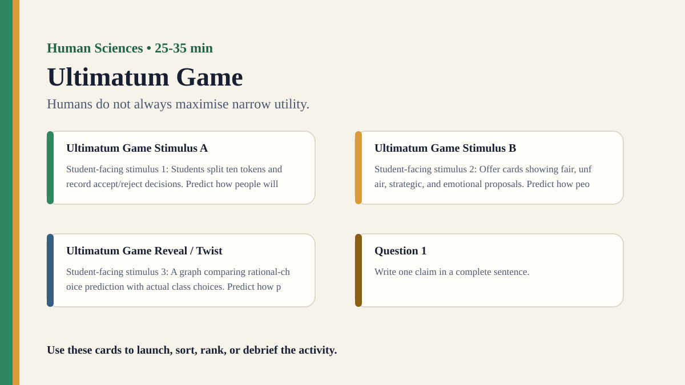

Detailed activity
Ultimatum Game
Students test whether human decisions always match narrow economic rationality.
Free classroom activity
Big Idea
Humans do not always maximise narrow utility.
Teacher Summary
Students test whether human decisions always match narrow economic rationality.
Use this activity to help students connect a concrete classroom experience to TOK questions about human sciences, evidence, interpretation, and responsible knowing.
Materials
- Tokens, slips of paper, or a digital form.
Ready to run
Classroom Resource Pack
Use the printable pack for concrete stimulus cards, a student recording sheet, teacher prompts, and a visual prompt image.
Visual Prompt

Student Prompt
Inspect the Ultimatum Game stimulus. Record one first claim, the evidence you used, your confidence, and what would make you revise.
Actual Lesson Questions
| # | Question for students | Teacher cue |
|---|---|---|
| 1 | Write one claim in a complete sentence. | Teacher cue: look for a clear claim, not just a description. |
| 2 | List two pieces of evidence. | Teacher cue: students should name visible words, data, source features, method features, or contextual clues. |
| 3 | Separate observation from interpretation. | Teacher cue: this is where assumptions, framing, models, or perspective usually appear. |
| 4 | Circle one confidence level and justify it. | Teacher cue: confidence is data for the debrief, not a grade. |
| 5 | Name one piece of missing information. | Teacher cue: push for method, source, context, comparison, or definitions. |
| 6 | Answer using the activity as evidence. | Teacher cue: students should move from the classroom example to a general TOK issue. |
Concrete Stimulus Packet
Stimulus
Survey Wording Snapshot
Version A: “Should students be allowed to use phones for learning?” Version B: “Should students be allowed to distract themselves with phones?” Same issue, different wording, different likely responses.
Use this to discuss method effects, incentives, and context.Stimulus
Ultimatum Game Example
Students split ten tokens and record accept/reject decisions.
Use this as the activity-specific version of the stimulus.Stimulus
Comparison / Twist Card
Offer cards showing fair, unfair, strategic, and emotional proposals.
Reveal after students commit to their first judgement.Teacher Key / Reveal
The key move is not the “right answer”; it is the moment students see how humans do not always maximise narrow utility.
Setup Notes
- Prepare a starter stimulus using: Students split ten tokens and record accept/reject decisions.
- Print or project the student response grid before the activity begins.
- Plan a private first-response moment before any group discussion.
Ready-to-Use Examples
- Students split ten tokens and record accept/reject decisions.
- Offer cards showing fair, unfair, strategic, and emotional proposals.
- A graph comparing rational-choice prediction with actual class choices.
Run Resources
- Printable student worksheet with observation, inference, evidence, and confidence columns.
- Teacher notes with setup checklist, sample facilitation language, misconceptions, and assessment look-fors.
- Classroom run kit with prompt cards, example stimuli, and debrief moves.
- PowerPoint deck with a student-facing sequence for running the activity.
Procedure
- Pair students. Player A divides 10 tokens between A and B.
- Player B accepts or rejects. If rejected, both get nothing.
- Collect anonymous results.
- Discuss why people reject unfair offers.
Teacher Language
- Write your first judgement before we discuss it; the first answer is useful evidence.
- Separate what you noticed from what you inferred.
- What would make this knowledge claim more reliable?
TOK Debrief Questions
- Knowledge question: Can human behaviour be predicted scientifically?
- Are humans rational knowers?
- How do fairness, emotion and culture affect decision-making?
Knowledge Questions
- Can human behaviour be predicted scientifically?
- Are humans rational knowers?
- How do fairness, emotion and culture affect decision-making?
Sample Student Output
- A student claim connected to Ultimatum Game: "My first judgement felt obvious, but my evidence was thinner than I realised."
- A revised claim that names a method, perspective, or language choice that changed the result.
- A knowledge question that moves beyond the activity example.
Exhibition Object Idea
A class distribution of accepted and rejected offers.
Adaptations
- Short lesson: use only the first example, one response grid, and one debrief question.
- Long lesson: add a second round where students revise the method and compare outcomes.
- Low-tech option: run with printed cards, sticky notes, and a board tally.
Extension Tasks
- Design a second version of the activity that tests the same knowledge issue in another AOK.
- Find a real-world example where the same knowledge problem matters outside the classroom.
- Write a 150-word TOK exhibition-style commentary using the activity as the object context.
Teacher Notes
Keep the activity low-stakes and debrief quickly so students focus on knowledge rather than performance.
Invite students to move from the classroom experience to a broader knowledge question before evaluating examples from real knowledge practices.